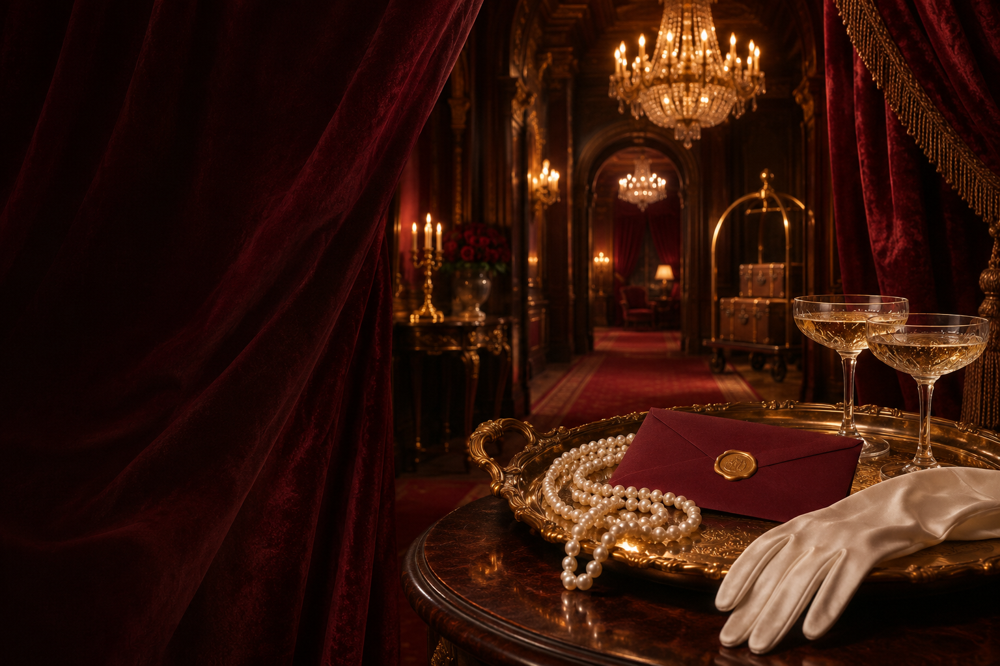

ВАШЕ ПРИГЛАШЕНИЕ В ДРУГУЮ ЖИЗНЬ
Между тайной
и чувством.
❦
Истории, в которых взгляды говорят больше слов.
Войдите — ваша роль ещё не написана.

ИСТОРИЯ ВЕЧЕРА01 / 03
Пока город
спит
Чужое письмо. Последний поезд.
И человек, который знает о тебе слишком много.
◷ 5 минут на эпизод
НЕКОТОРЫЕ ВСТРЕЧИ НЕ СЛУЧАЙНЫЛИСТАЙ СВОЮ ИСТОРИЮ ↓
MКоллекция историй03
Три мира. Тысячи недосказанных слов.
ЛИЧНОЕ ПРИГЛАШЕНИЕ
Позволь себе
другую жизнь.
Твой характер. Твои границы. Твой выбор.
Все решения доступны бесплатно —
чувства не должны стоить кристаллов.